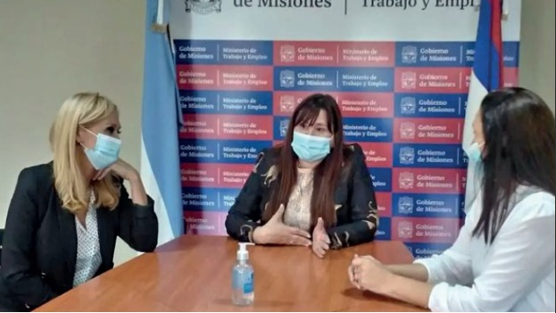
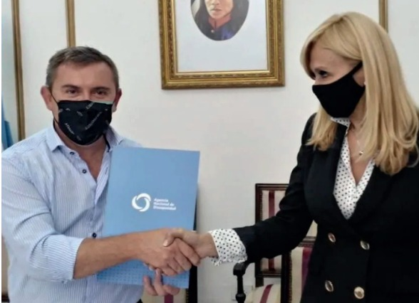

12/04/2022 / 13/4/2022
Paula Martinez, Sebastián Cohen, Amanda Alvarez
EX-2022-30765489- -APN-DDVYDD#AND EX-2022-30773682- -APN-DDVYDD#AND EX-2022-30780459- -APN-DDVYDD#AND
Firma de Convenio
Los municipios se comprometieron a poner a disposición infraestructura, recursos técnicos y humanos para los trámites
Nación, provincia y municipios firmaron un convenio de cooperación para acercar beneficios y facilitar la gestión de trámites a las personas con discapacidades y a sus familias. El acuerdo se celebró ayer entre la Agencia Nacional de Discapacidad (Andis), el gobierno de Misiones y 22 municipios. El convenio firmado apunta a la articulación y desarrollo de acciones de abordaje y despliegue local para el asesoramiento o la tramitación de los programas y prestaciones ejecutados y gestionados desde la Andis. El objetivo es la articulación entre las partes para agilizar trámites ante la agencia y ejecución de programas. Así, la Agencia, se compromete a brindar capacitaciones al personal designado de cada municipio, que a su vez oficiará de nexo directo para las acciones administrativas y de gestión. Además, aportará cartelería y folletería explicativa sobre sus diversos programas y herramientas.
En tanto, los municipios se comprometen a poner a disposición su infraestructura, recursos técnicos y humanos para llevar adelante el asesoramiento y tramitación de programas y prestaciones. En síntesis, se facilitará el acceso y realización de trámites y consultas sobre pensiones no contributivas y adhesión al Programa Federal Incluir Salud, entre otros beneficios. Luego de la firma, el gobernador Oscar Herrera Ahuad valoró esta unión de tareas. “Misiones tiene una larga historia en el concepto de la tarea y del trabajo de la discapacidad, pero sobre todo de las pensiones por discapacidad”, resaltó el mandatario. Así, remarcó que este convenio es fundamental no sólo en lo referido a la capacitación del recurso humano, sino por dar “la posibilidad de formar a la gente para que en nuestros municipios tengamos equipos de trabajo que entiendan la problemática, los planteos, los reclamos o cómo elevar la documentación”. Aseguró estar convencido de que se está allanando el camino a una parte de la población que demanda y que tienen sus derechos y expresó que es posible gracias a la excelente voluntad de la Nación como los responsables en la provincia.

